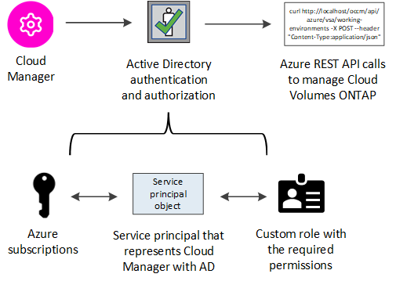

要求變更文件
要求變更文件 編輯此頁面
編輯此頁面 瞭解如何作出貢獻
瞭解如何作出貢獻管理 Azure 認證與 Cloud Manager 訂閱
當您建立Cloud Volumes ONTAP 一個功能完善的系統時、您需要選取Azure認證資料、才能與該系統搭配使用。如果您使用隨用隨付授權、也需要選擇Marketplace訂閱。如果您需要使用多個Azure認證或多個Azure Marketplace訂閱Cloud Volumes ONTAP 以供使用、請依照本頁的步驟進行。
有兩種方法可在Cloud Manager中新增額外的Azure訂閱和認證資料。
-
將額外的Azure訂閱與Azure託管身分識別建立關聯。
-
如果您要使用Cloud Volumes ONTAP 不同的Azure認證資料來部署功能、請使用服務主體來授予Azure權限、並將其認證資料新增至Cloud Manager。
將額外的 Azure 訂閱與託管身分識別建立關聯
Cloud Manager 可讓您選擇要部署 Cloud Volumes ONTAP 的 Azure 認證和 Azure 訂閱。除非您建立關聯、否則您無法為託管身分識別設定檔選取不同的 Azure 訂閱 "託管身分識別" 這些訂閱。
託管身分識別是 "初始 Azure 帳戶" 當您從 Cloud Manager 部署 Connector 時。部署 Connector 時、 Cloud Manager 會建立 Cloud Manager 操作員角色、並將其指派給 Connector 虛擬機器。
-
登入 Azure 入口網站。
-
開啟 * 訂閱 * 服務、然後選取您要部署 Cloud Volumes ONTAP 的訂閱內容。
-
按一下 * 存取控制（ IAM ） * 。
-
按一下「 * 新增 * > * 新增角色指派 * 」、然後新增權限：
-
選取 * Cloud Manager operator* 角色。

Cloud Manager運算子是Connector原則中提供的預設名稱。如果您為角色選擇不同的名稱、請改為選取該名稱。 -
指派 * 虛擬機器 * 的存取權。
-
選取建立 Connector 虛擬機器的訂閱。
-
選取 Connector 虛擬機器。
-
按一下「 * 儲存 * 」。
-
-
-
請重複這些步驟以取得額外訂閱內容。
當您建立新的工作環境時、現在應該能夠從多個 Azure 訂閱中選取託管身分識別設定檔。

將額外的Azure認證資料新增至Cloud Manager
當您從Cloud Manager部署Connector時、Cloud Manager會在擁有必要權限的虛擬機器上、啟用系統指派的託管身分識別。Cloud Manager會在您建立Cloud Volumes ONTAP 全新的作業系統以供參考時、依預設選取這些Azure認證資料。

|
如果您在現有系統上手動安裝Connector軟體、則不會新增一組初始認證資料。 "瞭解Azure認證與權限"。 |
如果您要使用Cloud Volumes ONTAP _different _ Azure認證來部署功能、則必須在Azure Active Directory中為每個Azure帳戶建立及設定服務主體、以授予必要的權限。然後您可以將新認證新增至Cloud Manager。
使用服務主體授予 Azure 權限
Cloud Manager 需要權限才能在 Azure 中執行動作。您可以在 Azure Active Directory 中建立及設定服務主體、並取得 Cloud Manager 所需的 Azure 認證資料、將必要的權限授予 Azure 帳戶。
下圖說明 Cloud Manager 如何取得在 Azure 中執行作業的權限。與一或多個 Azure 訂閱相關聯的服務主體物件、代表 Azure Active Directory 中的 Cloud Manager 、並指派給允許必要權限的自訂角色。

建立 Azure Active Directory 應用程式
建立 Azure Active Directory （ AD ）應用程式與服務主體、讓 Cloud Manager 可用於角色型存取控制。
您必須在 Azure 中擁有適當權限、才能建立 Active Directory 應用程式、並將應用程式指派給角色。如需詳細資訊、請參閱 "Microsoft Azure 說明文件：必要權限"。
-
從 Azure 入口網站開啟 * Azure Active Directory * 服務。

-
在功能表中、按一下 * 應用程式註冊 * 。
-
按一下「 * 新登錄 * 」。
-
指定應用程式的詳細資料：
-
* 名稱 * ：輸入應用程式的名稱。
-
* 帳戶類型 * ：選取帳戶類型（任何帳戶類型都可與 Cloud Manager 搭配使用）。
-
重新導向URI：您可以將此欄位保留空白。
-
-
按一下 * 註冊 * 。
您已建立 AD 應用程式和服務主體。
將應用程式指派給角色
您必須將服務委託人繫結至一或多個 Azure 訂閱、並指派自訂的「 OnCommand 支援對象」角色給該委託人、以便 Cloud Manager 在 Azure 中擁有權限。
-
建立自訂角色：
-
複製的內容 "Connector的自訂角色權限" 並將它們儲存在Json檔案中。
-
將 Azure 訂閱 ID 新增至可指派的範圍、以修改 Json 檔案。
您應該為使用者建立 Cloud Volumes ONTAP 的各個 Azure 訂閱新增 ID 。
-
範例 *
"AssignableScopes": [ "/subscriptions/d333af45-0d07-4154-943d-c25fbzzzzzzz", "/subscriptions/54b91999-b3e6-4599-908e-416e0zzzzzzz", "/subscriptions/398e471c-3b42-4ae7-9b59-ce5bbzzzzzzz" -
-
使用 Json 檔案在 Azure 中建立自訂角色。
下列步驟說明如何在Azure Cloud Shell中使用Bash建立角色。
-
開始 "Azure Cloud Shell" 並選擇Bash環境。
-
上傳Json檔案。

-
輸入下列Azure CLI命令：
az role definition create --role-definition Policy_for_Setup_As_Service_Azure.json您現在應該擁有名為 Cloud Manager 的自訂角色、可以指派給 Connector 虛擬機器。
-
-
-
將應用程式指派給角色：
-
從 Azure 入口網站開啟 * 訂閱 * 服務。
-
選取訂閱。
-
按一下 * 存取控制（ IAM ） > 新增 > 新增角色指派 * 。
-
在「角色」索引標籤中、選取「* Cloud Manager operator*」角色、然後按一下「下一步」。
-
在「成員」索引標籤中、完成下列步驟：
-
保留*選取「使用者」、「群組」或「服務主體」*。
-
按一下*選取成員*。

-
搜尋應用程式名稱。
範例如下：

-
選取應用程式、然後按一下*選取*。
-
單擊 * 下一步 * 。
-
-
按一下「檢閱+指派」。
服務主體現在擁有部署Connector所需的Azure權限。
如果您想要從 Cloud Volumes ONTAP 多個 Azure 訂閱中部署支援功能、則必須將服務授權對象繫結至每個訂閱項目。Cloud Manager 可讓您選擇部署 Cloud Volumes ONTAP 時要使用的訂閱。
-
新增 Windows Azure Service Management API 權限
服務主體必須具有「 Windows Azure Service Management API 」權限。
-
在 * Azure Active Directory * 服務中、按一下 * 應用程式註冊 * 、然後選取應用程式。
-
按一下「 * API 權限 > 新增權限 * 」。
-
在「 * Microsoft API* 」下、選取「 * Azure 服務管理 * 」。

-
按一下「 * 以組織使用者身分存取 Azure 服務管理 * 」、然後按一下「 * 新增權限 * 」。

取得應用程式 ID 和目錄 ID
將 Azure 帳戶新增至 Cloud Manager 時、您必須提供應用程式的應用程式（用戶端） ID 和目錄（租戶） ID 。Cloud Manager 會使用 ID 以程式設計方式登入。
-
在 * Azure Active Directory * 服務中、按一下 * 應用程式註冊 * 、然後選取應用程式。
-
複製 * 應用程式（用戶端） ID* 和 * 目錄（租戶） ID* 。

建立用戶端機密
您需要建立用戶端機密、然後為 Cloud Manager 提供機密的價值、以便 Cloud Manager 使用它來驗證 Azure AD 。
-
開啟 * Azure Active Directory * 服務。
-
按一下 * 應用程式註冊 * 、然後選取您的應用程式。
-
按一下 * 「憑證與機密」 > 「新用戶端機密」 * 。
-
提供機密與持續時間的說明。
-
按一下「 * 新增 * 」。
-
複製用戶端機密的值。

您的服務主體現在已設定完成、您應該已經複製應用程式（用戶端） ID 、目錄（租戶） ID 、以及用戶端機密的值。新增 Azure 帳戶時、您必須在 Cloud Manager 中輸入此資訊。
將認證資料新增至Cloud Manager
在您提供 Azure 帳戶所需的權限之後、即可將該帳戶的認證資料新增至 Cloud Manager 。完成此步驟可讓您Cloud Volumes ONTAP 使用不同的Azure認證資料來啟動功能。
如果您剛在雲端供應商中建立這些認證資料、可能需要幾分鐘的時間才能使用。請稍候幾分鐘、再將認證資料新增至Cloud Manager。
您必須先建立連接器、才能變更 Cloud Manager 設定。 "瞭解方法"。
-
在 Cloud Manager 主控台右上角、按一下「設定」圖示、然後選取 * 認證 * 。

-
按一下*「Add Credential*（新增認證*）」、然後依照精靈中的步驟進行。
-
認證位置：選擇* Microsoft Azure > Connector*。
-
定義認證：輸入Azure Active Directory服務主體的相關資訊、以授予必要的權限：
-
應用程式（用戶端） ID ：請參閱 [Getting the application ID and directory ID]。
-
目錄（租戶） ID ：請參閱 [Getting the application ID and directory ID]。
-
用戶端機密：請參閱 [Creating a client secret]。
-
-
市場訂閱：立即訂閱或選取現有的訂閱、以建立Marketplace訂閱與這些認證的關聯。
若要以Cloud Volumes ONTAP 每小時費率（PAYGO）支付給__LW_Y1_Y1_Y1_YGO_Y1_Y1_Y1_Y1_Y1_Y1_Y1_Y1_Y1_Y1_
-
審查：確認新認證資料的詳細資料、然後按一下*新增*。
-
您現在可以從「詳細資料與認證」頁面切換至不同的認證集合 "在建立新的工作環境時"

管理現有認證資料
透過建立Marketplace訂閱關聯、編輯認證資料及刪除認證、來管理您已新增至Cloud Manager的Azure認證資料。
將 Azure Marketplace 訂閱與認證資料建立關聯
將 Azure 認證資料新增至 Cloud Manager 之後、您可以將 Azure Marketplace 訂閱與這些認證資料建立關聯。訂閱可讓您建立隨用隨付 Cloud Volumes ONTAP 的功能、並使用其他 NetApp 雲端服務。
您可能會在將認證新增至 Cloud Manager 之後、在兩種情況下建立 Azure Marketplace 訂閱的關聯：
-
初次將認證新增至 Cloud Manager 時、您並未建立訂閱關聯。
-
您想要以新的訂閱取代現有的 Azure Marketplace 訂閱。
您必須先建立連接器、才能變更 Cloud Manager 設定。 "瞭解方法"。
-
在 Cloud Manager 主控台右上角、按一下「設定」圖示、然後選取 * 認證 * 。
-
按一下動作功能表以取得一組認證資料、然後選取「建立訂閱關聯」。

-
從下拉式清單中選取訂閱、或按一下「 * 新增訂閱 * 」、然後依照步驟建立新的訂閱。
下列影片會從工作環境精靈的內容開始播放、但會在您按一下「 * 新增訂閱 * 」之後顯示相同的工作流程：
編輯認證資料
修改Azure服務認證資料的詳細資料、即可在Cloud Manager中編輯Azure認證資料。例如、如果為服務主體應用程式建立新的密碼、您可能需要更新用戶端密碼。
-
在 Cloud Manager 主控台右上角、按一下「設定」圖示、然後選取 * 認證 * 。
-
按一下動作功能表以取得一組認證資料、然後選取*編輯認證*。
-
進行必要的變更、然後按一下「套用」。
刪除認證資料
如果您不再需要一組認證資料、可以從Cloud Manager刪除。您只能刪除與工作環境無關的認證資料。
-
在 Cloud Manager 主控台右上角、按一下「設定」圖示、然後選取 * 認證 * 。
-
按一下動作功能表以取得一組認證資料、然後選取*刪除認證資料*。
-
按一下*刪除*以確認。